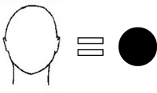
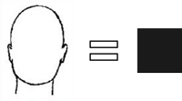
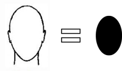
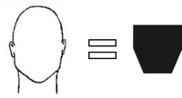
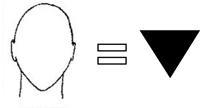

¿Qué lentes se adaptan mejor a tu cara?
Descubre la FORMA IDEAL
A continuación te ayudamos a encontrar que tipo de cara tienes y que icono le corresponde a tu forma.

Para tipos de cara redonda busca los lentes que suavicen la redondez y crear un efecto sutil de alargamiento. Los mejores lentes para ti son aquellos con molduras gruesas en formas rectangulares o cuadradas que cubran el ancho de los pómulos. SUNSET, DAWN y DUSK son tu mejor opción.

Para tipos de cara cuadrada busca los lentes que suavicen tus facciones. Las mejores forma de lentes son las ovaladas, ideales para conseguir este efecto. SUNRISE calibre 54 y calibre 56, NOON y NIGHT son perfectas para ti.

Para tipos de cara ovalada todo tipo de lentes te quedarán bien, teniendo en cuenta la proporción. Si tu rostro es pequeño SUNRISE calibre 54, NOON y DAWN son ideales para ti. Si tu rostro es más grande SUNRISE calibre 56, SUNSET, DUSK y NIGHT se te verán increíbles.

Para tipos de cara en forma de diamante o corazón busca lentes que compensen la barbilla estrecha para conseguir un efecto de esbeltez. Las monturas ovaladas te quedarán muy bien, SUNRISE calibre 54 y SUNRISE calibre 56, NOON y NIGHT pueden ser tu mejor accesorio.

Para tipos de cara triangular los lentes rectangulares con terminaciones redondas y los lentes anchos son recomendables para este tipo de rostro, específicamente las de tipo aviador. Los mejores modelos para ti son NIGHT, NOON, SUNRISE calibre 54 y SUNRISE calibre 56.
En la descripción de cada modelo, encontrarás estos iconos.
Identifica a partir de estos iconos los modelos que le van a tu cara y selecciona tus lentes a medida.